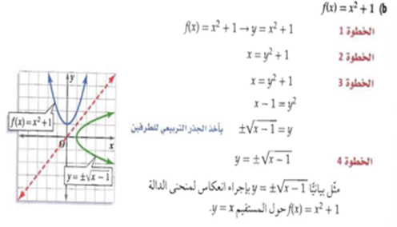
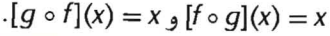

الدالة العكسية ( Inverse Function )
الدالة العكسية: هي الدالة التي يكون فيها عناصر المجال هي المعكوس لعناصر المجال المقابل.
التعبير اللفظي : تكون كل من الدالتين g، f دالة عكسية للأخرى، إذا وفقط كان تركيب كل منهما يساوي الدالة المحايدة (I(x) = (x.
الرموز : الدالتان (g(x) ، f(x كل منهما تمثل دالة عكسية للأخرى، اذا وفقط اذا كان .
مثال للرسم البياني للدالة العكسية :

